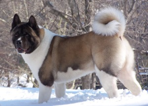

Here you'll find information about a number of different breeds. Things like basic care, attitude, if they're family-friendly, and common medical problems.
Name |
Origin |
Size |
Colors |
Description |
|
| The Akita | Japan | Large |
|
The Akita is a large sized dog which is characterized by being courageous, dignified, and extremely loyal. A close cousin to the Shiba, they are somewhat active dogs, enjoying regular exercise without being extremely hyper. They are very particular about their grooming habits, and their thick, medium-length coat requires weekly grooming. Furthermore, their diet requires regular, nutritious food and fresh water. Akitas are prone to a number of health problems, however, these can be managed or prevented through close veteranary care. Originating in Japan, the Akita is one of seven breeds designated as a national monument in the country. |  |